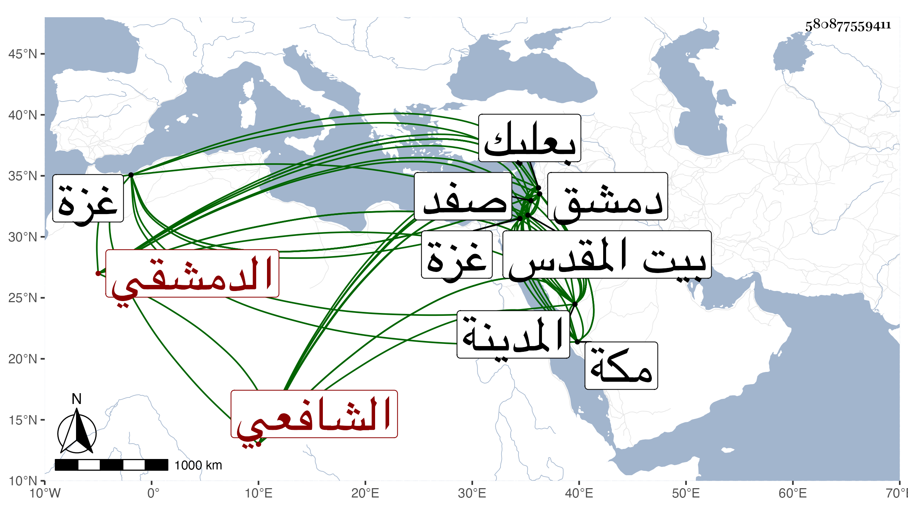

0902Sakhawi.DawLamic.ITO20230111-ara1.EIS1600.580877559411
Biography ID: 580877559411
239
أحمد بن محمد بن أحمد بن عمر بن رضوان شهاب الدين الدمشقي الشافعي سبط الشمس محمد بن عمر السلاوي ولذا يعرف بالسلاوي وهو والد عمر الآتي . ولد قبل الأربعين وسبعمائة سنة ثمان وثلاثين أو نحوها ، وكان أبوه حريريا بحيث عرف ابنه بابن الحريري أيضا فمات وابنه صغير ونشأ يتيما فاشتغل بالفقه ولازم العلاء حجي والتقي الفارقي وكان يدعى أنه سمع من جده لأمه لكن لم يوقف على ذلك مع نسبة الحافظ الهيثمي له إلى المجازفة ، وكذا سمع على التقي بن رافع وابن كثير بل قال ابن حجي أنه قرأ عليهما ثم أخذ في قراءة المواعيد وقرأ الصحيح مرارا على عدة مشايخ وعلى العامة وكان صوته حسنا وقراءته جيدة وولي قضاء بعلبك سنة ثمانين ثم قضاء المدينة بعد العراقي بعد سنة تسعين ثم تنقل في ولاية القضاء بصفد وغزة والقدس وغيرها ، وكان كثير العيال متقللا . مات في أواخر المحرم سنة ثلاث عشرة بدمشق وهو آخر من بقي بها من طلبة الشافعية وأكبرهم سنا فيما قاله الشهاب بن حجي ، قال شيخنا وقد اجتمعت به كثيرا وسمعت جل البخاري بقراءته في سنة خمس وثمانين بمكة على النشاوري وكانت بيننا مودة ، ترجمه شيخنا في معجمه وإنبائه . وزاد في إنبائه محمدا قبل عمر ، وذكرته في تاريخ المدينة وذكره القمريزي في عقوده وأنه كان يتردد إليه بدمشق فكان يأنس به وأرخه في تاريخ عشري صفر بدمشق .
